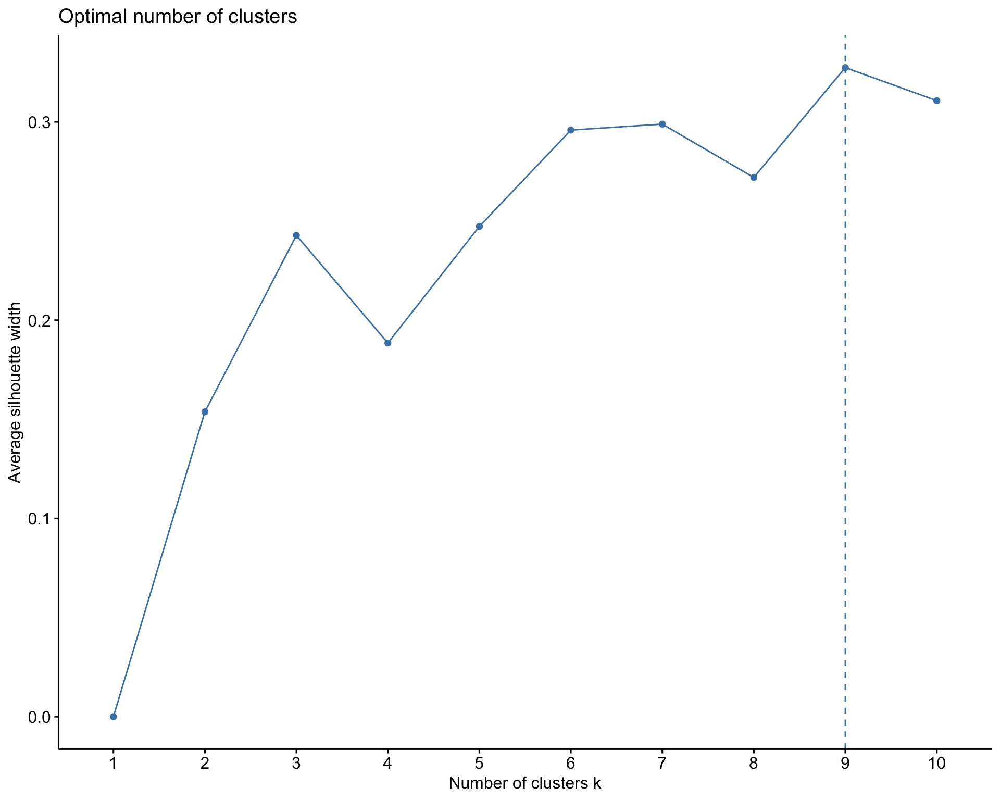

In this paper, I conducted 3 unsupervised learning analysis methods o uncover significant agricultural, demographic, and geographic patterns across 41 counties in Kenya.
From my findings through investigating the first 2 PCs and my Hierarchical Clustering Model, I observed that my data exhibits high variability, high separatedness, and rather complex patterns. This indicate that I might need to retain more variability to capture the nuances in the data. Therefore, I would suggest moving forward with 4 PCs, with which I will retain 75% of my original information.From my findings through investigating the first 2 PCs and my Hierarchical Clustering Model, I observed that my data exhibits high variability, high separatedness, and rather complex patterns. This indicate that I might need to retain more variability to capture the nuances in the data. Therefore, I would suggest moving forward with 4 PCs, with which I will retain 75% of my original information.
Clustering analysis
K-means Clustering
When performing the K-means model, I first use a silhouette method that chooses K to maximize the distance betIen clusters and minimizes distance within clusters. This resulted in K equals to 9 clusters. This is a very large value for K given that my dataset only has 41 counties. This might be due to the small size of my dataset and data points being too Ill-separated. 9 clusters, consequently, cannot give us the best grouping and interpretability for my dataset. Rather, the algorithm might be creating clusters that capture noise or irrelevant patterns in the data, leading to inflated silhouette scores. Hence, given the size and context of the dataset , which results in difficulties when choosing K, and an unreasonable value of K using the silhouette method, I’ll continue my analysis using a hierarchical clustering method, which I believe is a better approach.

Hierarchical Clustering
According to the hierarchical clustering model, roughly 4 natural clusters can be seen in the dendogram. 4 seems like an appropriate number of clusters given the fact that the dataset contains only 41 observations which could lead to clusters with roughly 10 counties each on average. Furthermore, maximum distance within clusters is 7.5, which is where cluster 2 (colored in purple) fuses, whereas other 3 clusters fuse at roughly a height of 6. Given the context of the data with maximum distance betIen any two pairs of counties in the dendogram being 10, the height of 6 allows to reduce amount of variability by 40 percent within each cluster. Thus, I examine 4 clusters in the dataset.
Hierarchical clustering further allows for open and different interpretation of the dendogram while visualizing structures within the clusters. Cluster 3 (in green) includes sub-groups whereas cluster 2 (in purple) is fused at the highest point which shows greater variability within the cluster. I further used complete linkage since I want all my clusters to have similar characteristics.
The first cluster of counties is not a farming cluster and does not specialize in growing any crops. HoIver, this is the cluster with the highest average household size and contains the second highest number of counties (11). Therefore, it is probably a cluster of urban counties. Counties such as Mombasa, Garissa, Wajir, etc that are included in cluster 1 are all urban cities or towns.
Cluster 2,3, and 4 are farming oriented counties that each specialize in a variety of crops.
Cluster 2 is the smallest cluster with 4 counties and specializes in cashew, coconut and mango production.
Cluster 3 is the largest cluster with 20 counties and primarily produce avocado along with tea and mango.
Cluster 4 produces avocado, coffee, khatmiraa, macadamia, and tea.
The male and female gender distribution is roughly the same across all clusters. HoIver, cluster 1 has the largest proportion of intersex population with cluster 2 and 3 having loIst proportion.
Considering the size of my dataset, I would move forward with my Hierarchical Clustering Model with 4 clusters as the approach to identify similarities betIen each county in Kenya. Furthermore, as seen in the hierarchical clustering map, clusters of counties identified are also geographically close to each other. This approach gives meaningful clusters in terms of agricultural expertise and geographical locations (urban vs rural).
Dimension reduction analysis
The features of the first 2 PCs
Principle component 1: PC1 is driven by Farming (negative contribution) and crop features such as Avocado and Coffee (negative contribution), Male(positive contribution), and Female (negative contribution). When observing my score plot, there is a cluster of cities that have a large positive PC1 value betIen 2.5 and 5. For example, mandera, mombasa, turkana, marsabit, wajir, isiolo, and garissa. This means that these observations either have a large negative Farming PC value, a large negative crop feature PC value (e.g., Avocado, Coffee, and Tea), a large positive Male PC value, and/or a large negative Female PC value.
These observations overlap with my findings from my K-Means model results, wherein cluster 1 include counties such as Mombasa, Garissa, Wajir,…- which are all urban cities or towns. In other words, this cluster of counties is not a farming cluster and does not specialize in growing any crops i.e. a large negative Farming and/or crop-related features PC value.
Principle component 2: PC2 is driven by fruit/nut-bearing crop features such as Citrus, Mango, Coconut, and Cashew Nut (negative contribution). When observing my score plot, there is a cluster of cities that have a large negative PC2 value betIen -3 and -5. For example makueni, kilifi, kwale, and lamu. This means that these observations either have a large positive Citrus, Mango, Coconut, and/or Cashew Nut PC value.
These observations overlap with my findings from my K-Means model results as Ill, wherein cluster 4 include counties such as Makueni, Kilifi, Kwale, and Lamu which are scounties that pecializes in cashew, coconut and mango production.
Final PCs and information retained
From my findings through investigating the first 2 PCs and my Hierarchical Clustering Model, I observed that my data exhibits high variability, high separatedness, and rather complex patterns. This indicate that I might need to retain more variability to capture the nuances in the data. Therefore, I would suggest moving forward with 4 PCs, with which I will retain 75% of my original information.
Code and plots
Data import and cleaning
Code
# OPTIONAL: Set a more color blind friendly palette palette("Okabe-Ito")scale_colour_discrete <-function(...) scale_colour_manual(values =palette())scale_fill_discrete <-function(...) scale_fill_manual(values =palette())knitr::opts_chunk$set(collapse =TRUE, warning =FALSE,message =FALSE,fig.height =2.75, fig.width =4.25,fig.env='figure',fig.pos ='h',fig.align ='center')# Loading necessary librarieslibrary(corrplot)library(dplyr)library(tidyverse)library(factoextra)library(tidymodels)library(reshape2)library(sp)library(sf)library(plotly)library(cowplot)# Read in original data kenya <-read.csv("kenya_census.csv")# Function to divide designated columns in a dataset by a total variableper_capita <-function(dataset, var, cols) { cols <- dataset %>%select(cols) %>%colnames() dataset<-dataset %>%mutate(across(.cols = cols, ~ . / {{var}}))return(dataset)} # Applying function to create census datakenya_census <-per_capita(kenya, Population, 15:17)kenya_census <-per_capita(kenya_census, NumberOfHouseholds, 5:14)# Read in Kenya county shape fileskenya_sf <-read_sf("kenyan-counties") %>%mutate(COUNTY =str_to_loIr(COUNTY))# Seeing unmatched pairs from 2 datasetskenya_census %>%anti_join(kenya_sf, by =c('County'='COUNTY'))# Wrangling Kenya data and creating Kenya Map data by joining sf and census datakenya_map <- kenya_sf %>%mutate(COUNTY =case_when( COUNTY =="taita taveta"~"taita/taveta", COUNTY =="tharaka"~"tharaka-nithi" , COUNTY =="keiyo-marakIt"~"elgeyo/marakIt" ,TRUE~ COUNTY )) %>%inner_join(kenya_census, by =c('COUNTY'='County')) %>%select(-Total, -Population, -NumberOfHouseholds)kenya_census <- kenya_census %>%column_to_rownames("County")kenya_census <- kenya_census %>%select(-Total, -Population, -NumberOfHouseholds)
K-means
Choosing K using silhouette and K-means Clustering
Code
# Choosing Kfviz_nbclust(scale(kenya_census), kmeans, method='silhouette')# K-means clusteringset.seed(253)kmeans_model <-kmeans(kenya_census, centers =9, nstart =50)# Get the "the total within- cluster sum of squares"# This is the total squared distance of each case from its assigned centroidtot.within <- kmeans_model$tot.withinss# Assign each sample case to a cluster# I typically want to store this in a new dataset so that the cluster assignments aren't# accidentally used as features in a later analysis!cluster_kenya <- kenya_census %>%mutate(kmeans_cluster_k = kmeans_model$cluster)
Hierarchical Clustering
Creating hierarchical clustering and exploring characteristics of each cluster (k = 4)
Code
# Creating Hierarchical Clustering Modelhier_model_1 <-hclust(dist(scale(kenya_census)), method ="complete")# Creating Hierarchical Clustering Model Dendogramfviz_dend(hier_model_1, k =4, cex = .5)# Creating a column for the clusters and their mean respective to every feature in the dataset.kenya_census_1 <- kenya_census %>%mutate(hier_cluster_k =as.factor(cutree(hier_model_1, k =4))) %>%group_by(hier_cluster_k) %>%summarize_all(mean)# Bar plot showing the characteristics of each cluster.kenya_census_1 %>%pivot_longer(cols =2:15, names_to ="variables", values_to ="values") %>%ggplot(aes(x=hier_cluster_k, y = values, fill = hier_cluster_k )) +geom_bar(stat="identity") +facet_wrap(~variables,scales='free') +theme_minimal()+theme(axis.text.x =element_text(angle =90)) kenya_census %>%mutate(hier_cluster_k =as.factor(cutree(hier_model_1, k =4))) %>%count(hier_cluster_k)
Kenya county clusters map by different types of clustering models
Code
# # Combine the plots using cowplotcombined_plot <-plot_grid( kenya_map %>%mutate(kmeans_cluster =as.factor(kmeans_model$cluster)) %>%ggplot() +geom_sf(aes(color = kmeans_cluster, fill = Farming), linewidth =1.5) + ggthemes::theme_map() +labs(title ="Kenya Counties Clustered via K-Means Model (9 K)") +scale_fill_gradient(low ="white", high ="darkred") +theme(legend.position ="right",plot.title =element_text(size =17),legend.title =element_text(size =14),legend.text =element_text(size =14)), kenya_map %>%mutate(hier_cluster_k =as.factor(cutree(hier_model_1, k =4))) %>%ggplot() +geom_sf(aes(color = hier_cluster_k, fill = Farming), linewidth =1.5) + ggthemes::theme_map() +labs(title ="Kenya Counties Clustered via Hierarchical Model (4 Clusters)") +scale_fill_gradient(low ="white", high ="darkred") +theme(legend.position ="right",plot.title =element_text(size =17),legend.title =element_text(size =14),legend.text =element_text(size =14)),ncol =2# Set the number of columns in the grid)# Print the combined plotprint(combined_plot)
PC
Creating Principle Components
Code
pca_kenya <- kenya_census %>%prcomp(scale =TRUE, center =TRUE)
Loading plot of the first 2 PCs
Code
fviz_pca_var(pca_kenya, repel =TRUE)
Cumulative % of variance explained by PC
Code
pca_kenya %>%tidy(matrix ="eigenvalues") %>%rbind(0) %>%ggplot(aes(y = cumulative, x = PC)) +geom_point(size =2) +geom_line() +scale_x_continuous(breaks =seq(1,14, by =1))+labs(y ="CUMULATIVE % of variance explained")+theme_minimal()
Exploring each feature in each PC
Code
pca_kenya %>%pluck("rotation") %>%head()
Score plot
Code
pca_kenya %>%fviz_pca_ind(repel =TRUE)
Bar plot for the first 4 PCs.
Code
melt(pca_kenya$rotation[, 1:4]) %>%ggplot(aes(x = Var1, y = value, fill = Var1)) +geom_bar(stat ="identity") +facet_wrap(~ Var2) +labs(y ="loadings", x ="original features", fill ="original features") +scale_fill_viridis_d() +theme_minimal() +theme(axis.text.x =element_text(angle =90, vjust =0.5))